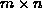
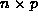
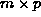
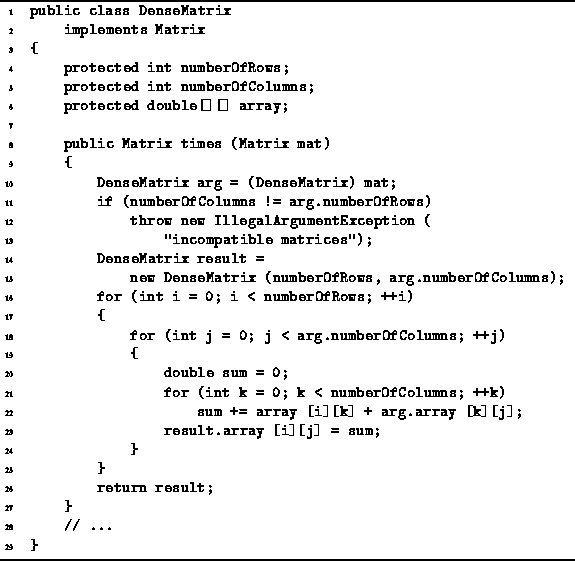

Data Structures and Algorithms
with Object-Oriented Design Patterns in Java
Data Structures and Algorithms
with Object-Oriented Design Patterns in JavaGiven an  matrix A and an  matrix B, the product C=AB is an  matrix. The elements of the result matrix are given by
Accordingly, in order to compute the produce matrix, C,
we need to compute mp summations
each of which is the sum of n product terms.
An algorithm to compute the matrix product
is given in Program  .
The algorithm given is a direct implementation of Equation .
.
The algorithm given is a direct implementation of Equation .

Program: DenseMatrix class times method.
The algorithm begins by checking to see that the matrices to be multiplied have compatible dimensions. That is, the number of columns of the first matrix must be equal to the number of rows of the second one. This check takes O(1) time in the worst case.
Next a matrix in which the result will be formed is constructed (line 14-15). The running time for this is O(mp). For each value of i and j, the innermost loop (lines 21-22) does n iterations. Each iteration takes a constant amount of time.
The body of the middle loop (lines 18-24) takes time O(n) for each value of i and j. The middle loop is done for p iterations, giving the running time of O(np) for each value of i. Since, the outer loop does m iterations, its overall running time is O(mnp). Finally, the result matrix is returned on line 26. This takes a constant amount of time.
In summary, we have shown that lines 10-13 are O(1); lines 14-15 are O(mp); lines 16-25 are O(mnp); and line 26 is O(1). Therefore, the running time of the canonical matrix multiplication algorithm is O(mnp).
 Copyright © 1998 by Bruno R. Preiss, P.Eng. All rights reserved.
Copyright © 1998 by Bruno R. Preiss, P.Eng. All rights reserved.